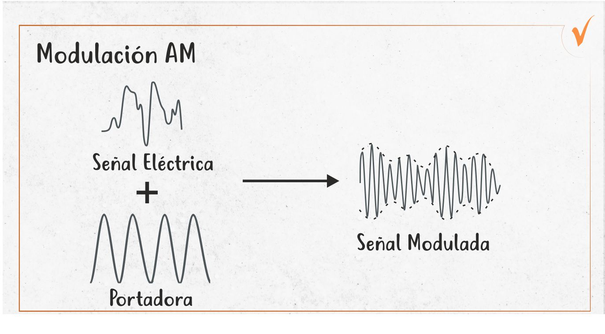
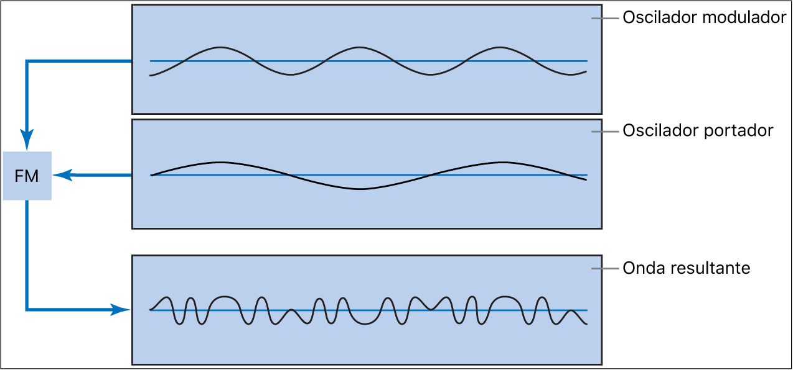
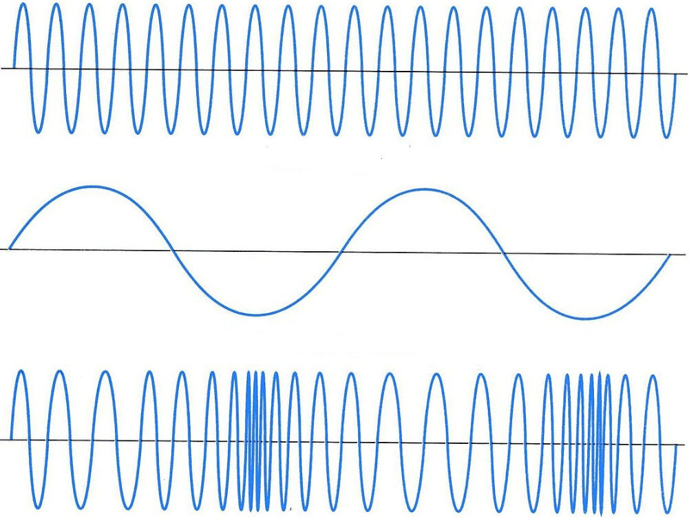

La conversión de analógico a analógico implica la modulación de una señal portadora para transmitir información. Este tipo de conversión permite la transmisión eficiente de señales de voz y video en sistemas de comunicación. Las señales moduladas pueden cambiar en amplitud, frecuencia o fase para representar los datos.
Ventajas
Facilita la transmisión a largas distancias.
Optimiza el uso del espectro de frecuencias.
Ofrece resistencia a ciertos tipos de interferencias.
Aplicaciones Comunes
Transmisiones de radio.
Televisión analógica.
Comunicaciones satelitales.
Modulación en Amplitud (AM)
La modulación en amplitud (AM) consiste en variar la amplitud de una portadora de alta frecuencia de acuerdo con la señal de información. Es un método sencillo de implementar y se utiliza principalmente en la radio AM.
Características
La señal modula la amplitud de la portadora.
Es fácil de implementar, pero es susceptible al ruido y a interferencias.
Usos
Radio AM.
Algunas aplicaciones de radiodifusión de bajo costo.

Modulación en Frecuencia (FM)
La modulación en frecuencia (FM) es un método en el cual la frecuencia de la señal portadora varía según la señal de información. Este tipo de modulación es reconocida por su alta resistencia al ruido, lo que la convierte en una opción ideal para transmisiones de audio de alta calidad.
Ventajas
Alta resistencia al ruido: La FM es menos susceptible a interferencias, lo que mejora la calidad de la señal.
Transmisiones de alta fidelidad: Se utiliza principalmente para garantizar un sonido claro y nítido.
Usos
Radio FM: Utilizada ampliamente para la transmisión de estaciones de radio.
Televisión analógica: Empleada para transmitir el sonido en la televisión.
Sistemas de audio de dos vías: Utilizada en comunicaciones bidireccionales, como radios de dos vías.

Modulación en fase (PM)
La modulación en fase (PM) consiste en modificar la fase de la señal portadora en función de la señal de información.
Características
Menor Sensibilidad al Ruido: Es menos susceptible a interferencias en comparación con la modulación en amplitud.
Complejidad en la Demodulación: Puede ser más complicada de demodular y requiere un diseño de receptor más avanzado.
Aplicaciones
Modulación Digital: Es comúnmente utilizada en técnicas de modulación digital, donde se combina con otros métodos, como el PSK (Phase Shift Keying).

Codec y Codificación
Los códecs son fundamentales en la codificación de audio y televisión digital, ya que permiten comprimir y descomprimir datos para una transmisión y almacenamiento más eficientes.
Tipos de Códecs
Códecs con Pérdida: Incluyen formatos como MP3 y AAC, que reducen el tamaño del archivo al eliminar parte de la información.
Códecs Sin Pérdida: Ejemplos como FLAC, que preservan toda la información original del sonido.
Codificación en Televisión Digital
La televisión digital utiliza estándares como MPEG para comprimir las señales de video, lo que permite una transmisión más eficiente. Este proceso de codificación reduce la cantidad de datos necesarios y facilita la transmisión de contenido en alta definición.